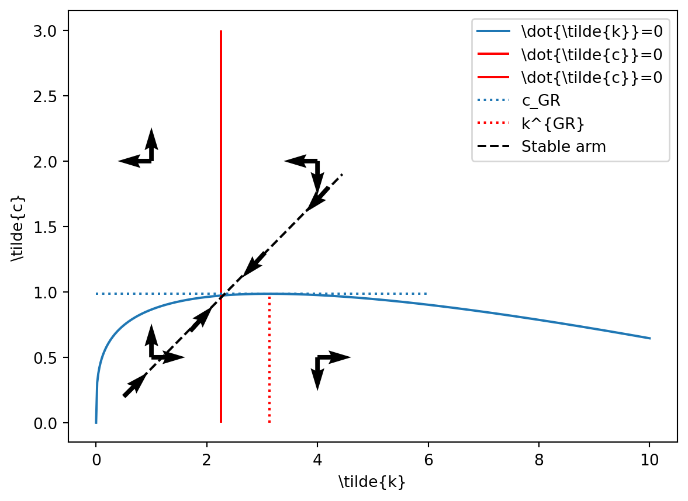
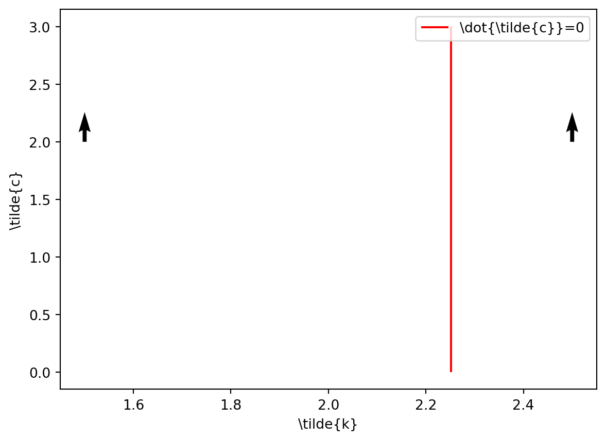
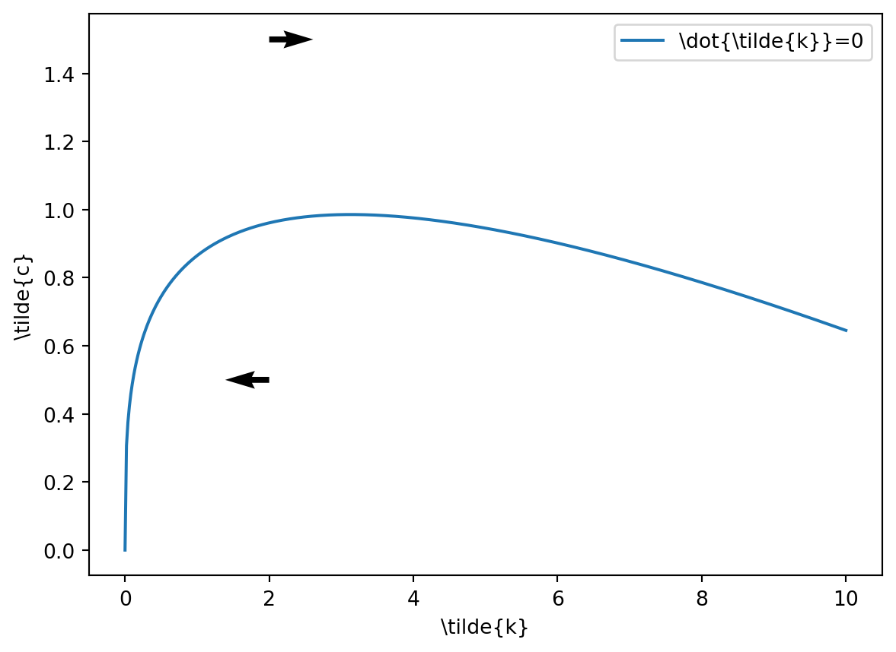

The Solow model assumes exogenous and constant savings rate, when the savings are the source of capital accumulation and are a decision variable for the savers (households). The Ramsey model endogenizes consumption and savings decisions.
We will see that in the steady-state the saving rate in the Ramsey model is constant, similar to Solow model. Therefore, basically we will simply re-examine the results of the Solow model, while relaxing the assumption of exogeneity of the savings.
6.2 The Model
A large part of the model is similar to the Solow model, i.e. the production structure. The new element is the many-periods horizon problem of the households. We are going to study the infinite-horizon problem in continuous-time. 1
Neoclassical production function: \(Y(t)=F(K(t), A(t) L(t))\), where \(A(t)\) is the labor augmenting technology
One-sector model of growth: both capital and consumption goods are produced with the same technology
A continuum of infinitely lived and identical households of mass \(L(t)\)
The representative household is endowed with a unit of labor and chooses its consumption \(c(t)\), labor supply (and the evolution of assets \(\dot{b}(t)\) ) to maximize the lifetime utility \(U\), where:^[ Since the utility here should be perceived in cardinal sense, the households maximizes simply its utility multiplied by the size of the representative households.}
\[
U=\int_{0}^{\infty} u(c(t)) L(t) e^{-\rho t} d t
\]\(u(c(t))\) is the instantaneous utility from consumption of amount \(c(t)\) of final good in percapita terms. The instantaneous utility function is increasing and concave in \(c(t)\) (i.e., \(u^{\prime}>0, u^{\prime \prime}<0\) ) and satisfies the Inada conditions (i.e., \(\lim _{c \rightarrow 0} u^{\prime}(c)=\infty, \lim _{c \rightarrow \infty} u^{\prime}(c)=0\)). The concavity implies that households prefers to smooth consumption over time. The pure rate of time preference is \(\rho>0\). The budget constraint written in per capita terms of households is \(\dot{b}(t)=(r(t)-n)b(t)+w(t)-c(t)\)
We assume two exogenous evolution for population and technology: - Population grows at exogenous rate \(\frac{\dot{L}(t)}{L(t)}=n, L(0)>0\) (taken as given) - Technology grows at exogenous rate \(\frac{\dot{A}(t)}{A(t)}=g_{A}, A(0)>0\) (taken as given)
6.3 Individual Problems and Market equilibrium
The firm side is similar to Solow model. Formally, setting the final goods as numeraire the representative firm’s optimization problem is
The representative households chooses consumption path to maximize its lifetime utility. Its means of savings is accumulation of capital. Formally, the households’ problem is
\[
r(t)-\rho=-\frac{\dot{q}(t)}{q(t)}=-\frac{\dot{c}(t)}{c(t)} \frac{c(t) u^{\prime \prime}(c(t))}{u^{\prime}(c(t))}
\] or the optimal consumption path is
The transversality conditions states that the value of the current asset holdings in infinity is zero. Formally, this is part of the open boundary problem given by the maximization of \(H\).
Note that \(\frac{\dot{c}(t)}{c(t)}>0\) if \(r(t)-\rho>0\). The sensitivity of the growth of consumption to \(r(t)-\rho\) is higher, the lower is \(-\frac{u^{\prime}(c(t))}{u^{\prime \prime}(c(t)) c(t)}\), which is the intertemporal elasticity of substitution (or IES). This elasticity is a measure of the responsiveness of consumption to changes in the marginal utility, i.e., it measures the willingness to deviate from consumption smoothing. In a special case of constant intertemporal elasticity of substitution (CIES) utility function
\[
-\frac{u^{\prime}(c(t))}{u^{\prime \prime}(c(t)) c(t)}=-c(t)^{-\theta-1} \frac{1}{-\theta c(t)^{-\theta-1}}=\frac{1}{\theta}
\] The parameter \(\theta\) is thereforte the inverse of the intertemporal elasticity of substitution.
The CIES assumption is preserved in what follows.
The equilibrium in the asset market delivers again
This gives the law of motion for capital \(\dot{K}(t)(t)=Y(t)-C(t)-\delta K\), given that \(Y=F(K, A L)=R(t) K(t)+w(t) L(t)\). The last equation is implied by the homogeneity of degree one assumption and states that the final good producer earns zero profit under perfect competition in final good market.
Warning
Note that we could also have written the households’ problem where they would own the capital stock. In such case, the interest paid by firms to households would be \(r(t)\) and the per capita households budget constraint is \(\dot{k}(t)=(r(t)-n-\delta)k(t)+w(t)-c(t)\). This leads to an equivalent results.
6.4 Balanced growth path
All variables of the model need to grow at constant rates (BGP). On a BGP \(\frac{\dot{c}(t)}{c(t)} \equiv g_{c}\) is constant. We have CIES utility function and \(\rho\) is a constant parameter, therefore,
\[
g_{c}=\frac{1}{\theta}(r(t)-\rho)
\]
On the BGP, therefore the interest rate \(r\) should be constant. In our setup, constant interest rate then will imply that savings rate is constant. The intuition behind is that on the BGP there should be no shifts in the shares of aggregates (notice that \(C+S=Y\) ). Use the constant returns to scale assumption and write
\[
r-\delta=\frac{\partial F(K, A L)}{\partial K}=\frac{\partial F\left(\frac{K}{A L}, 1\right)}{\partial \frac{K}{A L}}=f^{\prime}\left(\frac{K}{A L}\right)
\] Given that \(f^{\prime \prime}<0\) the ratio \(\frac{K}{A L}\) should be constant on the BGP in order to have \(r=\) const. Similarly, given that the ratio \(\frac{K}{A L}\) is constant from the constant returns to scale assumption it follows that
\[
\frac{Y}{K}=F\left(1, \frac{A L}{K}\right)=\text { const. }
\] Given that \(\frac{Y}{K}\) is constant on the balanced growth path from the law of motion of capital it follows that the ratio \(\frac{C}{K}\) also should be constant,
\[
\frac{C}{K}=\frac{Y}{K}-\delta-g_{K}
\]
Therefore, \(g_{K}=g_{Y}=g_{C}\). Moreover, from \(\frac{Y}{K}=F\left(1, \frac{A L}{K}\right)\) it follows that on the balanced growth path \(g_{K}=g_{Y}=g_{C}=n+g_{A}\).
In order to derive the steady-state and to characterize the transition dynamics, redefine the model in units of effective labour, i.e., \(A L\). Let \(\tilde{y} \equiv \frac{Y}{A L}, \tilde{k} \equiv \frac{K}{A L}\), and \(\tilde{c} \equiv \frac{C}{A L}\). Also, for \(Y=\)\(A L \times F\left(\frac{K}{A L}, 1\right) \equiv A L \times f(\tilde{k})\).
From these definitions it follows that \(R=F_{K}=f^{\prime}(\tilde{k}), w=F_{L}=f(\tilde{k})-f^{\prime}(\tilde{k}) \tilde{k}\). In the steady-state \(g_{\tilde{y}}=g_{\tilde{k}}=g_{\tilde{c}}=0\). The steady-state and the transition dynamics of the model can be summarized by the following system of equations
In the steady-state \(\frac{\dot{\tilde{\tilde{k}}}(t)}{\tilde{\tilde{k}}(t)}=\frac{\dot{\tilde{c}}(t)}{\tilde{c}(t)}=0\), such that we can solve for the steady-state values of \(\tilde{c}\) and \(\tilde{k}\) from (7.2). Let \(F(K(t), A(t) L(t))=K(t)^{\alpha}(A(t) L(t))^{1-\alpha}\) and denote any stationary variable \(x\) by \(x^*\):
The transition dynamics of the model in \((\tilde{c}, \tilde{k})\) space is characterized by the Jacobian of the system of equations (7.2) evaluated in the neighborhood of the steady-state
Notice that \(\operatorname{det} J<0\). Since \(\operatorname{det} J=\mu_{1} * \mu_{2}\), where \(\mu_{1,2}\) are the eigenvalues of the matrix \(J\), we have that \(\mu_{1}\) and \(\mu_{2}\) have different signs. This means that we have saddle path with one stable arm and one unstable arm. The stable arm corresponds to negative eigenvalue, while the unstable arm corresponds to the positive eigenvalue.
import numpy as npimport matplotlib.pyplot as pltalpha,theta,rho,delta,n,g=0.3,2,0.03,0.1,0.015,0.02k=np.linspace(0,10,500)c=k**(alpha)-(delta+n+g)*kkgr=(alpha/(n+delta+g))**(1/(1-alpha))cmax=kgr**(alpha)-(delta+n+g)*kgrplt.plot(k,c,label=r'\dot{\tilde{k}}=0')plt.vlines((alpha/(rho+delta+g*theta))**(1/(1-alpha)),0,3,'r',label=r'\dot{\tilde{c}}=0')plt.vlines((alpha/(rho+delta+g*theta))**(1/(1-alpha)),0,3,'r',label=r'\dot{\tilde{c}}=0')plt.hlines(cmax,0,6,linestyles=':',label=r'c_GR')plt.vlines(kgr,0,cmax,linestyles=':',color='r',label=r'k^{GR}')plt.quiver([4,4],[0.5,0.5],[5,0],[0,-5]) #SE quadrantplt.quiver([4,4],[2,2],[-5,0],[0,-5]) #NE quadrantplt.quiver([1,1],[2,2],[-5,0],[0,5]) #NW quadrantplt.quiver([1,1],[0.5,0.5],[5,0],[0,5]) #SW quadrantplt.plot([0.5,4.45],[0.2,1.9],'k--',label='Stable arm')plt.quiver(1.7,0.7,2,2.2) #stable arm quiverplt.quiver(0.5,0.2,2,2) #stable arm quiverplt.quiver(3.05,1.3,-2,-2.2) #stable arm quiverplt.quiver(4.2,1.8,-2,-2.2) #stable arm quiverplt.xlabel(r'\tilde{k}')plt.ylabel(r'\tilde{c}')plt.legend()plt.show()

Figure 6.1: Phase Diagram of the Ramsey Model
The stable arm is the path converging to the steady state (located on the south-west and the north-east quadrant).
6.5 The Golden rule
Note that just as in the Solow model, the golden rule is defined by the maximum consumption level in steady state,i.e. the maximum of the curve in Figure 6.1, that is:
\[
\tilde{c}^{GR}: \max_{\tilde{k}} \tilde{c}= f(\tilde{k}) -(\delta+n+g_A)\tilde{k} \Rightarrow f'(\tilde{k}^{GR})=\delta+n+g_A
\] This has to be compared with respect to the steady state in equations (6.2):
\[
f'(\tilde{k}^*)=\delta+\rho+\theta g_A
\]
Hence, remembering that \(f'(\tilde{k})\) is decreasing in \(\tilde{k}\), the steady state is dynamically efficient (on the left-hand side of the maximum level of \(k^{GR}\) in Figure 6.1) if \(\delta+\rho+\theta g_A>\delta+n+g_A \Rightarrow \rho > n+(1-\theta)g_A\). Note that given the transversality condition and firms’ FOC \(r=f'(k)-\delta\), we see that the economy is indeed dynamically efficient as soon as the transversality condition is satisfied (i.e \(\rho>n+\theta g_A\)). This is in contrast to the Solow model that admits the possibility of a dynamically inefficient economy. The reason of such differences is that households’ here behave optimally over all generations including therefore not yet born individuals. Note however that due to a positive rate of time preference \(\rho>0\), the golden rule can not be reached (individuals take into account future generations but also favor present consumption). We label therefore the steady state condition for capital as the modified Golden rule.
Important
It is important to precise that although the economy never satisfies the golden rule of capital accumulation, this is not necessarily a problem as this is the optimal behaviour given a welfare criterion, even as new generations arrive continuously and no one dies (see next chapter in the case of finite a lifetime case). In contrast, dynamic efficiency was the only criterion to evaluate an economy in the Solow model but it was not based on a welfare criterion.
6.6 The Social Planner Problem
In the previous section, we were studying the decentralized problem, that is when households and firms make choices on their respective side and meet on the different market where prices adjust to ensure equilibrium. In this section, we consider the problem of a planner that take decisions for all agents (without any price mechanisms). We will show that in absence of any distortion in the decentralized case, the two problems are equivalent. The main interest for this exercise is to compare the first-best optimal allocations with respect to a decentralized (potentially distorted) outcome.
A planner have the same preferences as an individual household and firm’s technology. It has to choose the path of per capita consumption \(c(t)\) and effective capital stock \(\tilde{k}(t)\) to maximize:
\[
\begin{aligned}
\max_{c(t),\tilde{k}(t)} \int_{t=0}^{\infty} u(c) \exp^{-(\rho-n) t} dt \\
\text{s.t.} \quad \dot{\tilde{k}}(t)=f(\tilde{k}(t))-(\delta+n+g_A)\tilde{k}(t)-c(t)exp^{-g_A t} \\
\tilde{k}(0) \text{ given}
\end{aligned}
\] where the constraint is the aggregate resource constraint of the economy written in term of effective labor.
Denote \(\lambda\) as the multiplier of the constraint of the current-value Hamiltonian, the FOCs are:
Log-differentiate the first equation with respect to time to obtain \(-\frac{c(t)u''(c(t))}{u'(c(t))}\frac{\dot{c}(t)}{c(t)}=g_A-\frac{\dot{\lambda}(t)}{\lambda(t)}\) and substitute the growth rate of \(\lambda(t)\) by the second Foc:
\[
-\frac{c(t)u''(c(t))}{u'(c(t))}\frac{\dot{c}(t)}{c(t)}=g_A+(f'(\tilde{k}(t))-(\rho+\delta+g_A))
\] After eliminating the terms in \(g_A\), we note that we obtained the same FOC in the decentralized problem, hence the equivalence (in absence of distortion) of the two problems.
6.7 Appendix
6.7.1 Phase diagram
Consider the dynamic system we obtained:
\[
\begin{aligned}
& \frac{\dot{\tilde{c}}(t)}{\tilde{\tilde{c}}(t)}=\frac{1}{\theta}\left[f^{\prime}(\tilde{k}(t))-\delta-\rho-\theta g_{A}\right] \\
& \frac{\dot{\tilde{k}(t)}}{\tilde{k}(t)}=\frac{f(\tilde{k}(t))}{\tilde{k}(t)}-\frac{\tilde{c}(t)}{\tilde{k}(t)}-\left(\delta+n+g_{A}\right) \\
\end{aligned}
\] Consider first the Euler equation. It is easy to show that:
\[\begin{aligned}
\dot{\hat{c}}>0 \Leftrightarrow f'(\tilde{k})>\delta+\rho+\theta g_A \Leftrightarrow \tilde{k}<\tilde{k}^* \\
\dot{\hat{c}}>0 \Leftrightarrow f'(\tilde{k})<\delta+\rho+\theta g_A \Leftrightarrow \tilde{k}>\tilde{k}^* \\
\end{aligned}\] Where the last implications are obtained because \(f''(\tilde{k})<0\). It follows that on the left (respectively right) of the locus defining \(\dot{\tilde{c}}=0\), that is where \(\tilde{k}<\tilde{k}^*\) (respectively \(\tilde{k}>\tilde{k}^*\)), consumption is increasing (respectively decreasing) such that:
Code
import numpy as npimport matplotlib.pyplot as pltalpha,theta,rho,delta,n,g=0.3,2,0.03,0.1,0.015,0.02k=np.linspace(0,10,500)c=k**(alpha)-(delta+n+g)*kplt.vlines((alpha/(rho+delta+g*theta))**(1/(1-alpha)),0,3,'r',label=r'\dot{\tilde{c}}=0')plt.quiver(2.5,2,0,3) #right of k^*plt.quiver(1.5,2,0,3) #left of k^*plt.xlabel(r'\tilde{k}')plt.ylabel(r'\tilde{c}')plt.legend()plt.show()

Figure 6.2: Phase Diagram of the Ramsey Model
Consider now the capital accumulation equation. We get:
That is for every value of \(\tilde{c}\) above (respectively below) the curve, \(\tilde{k}(t)\) decreases (respectively increases) such that:
Code
import numpy as npimport matplotlib.pyplot as pltalpha,theta,rho,delta,n,g=0.3,2,0.03,0.1,0.015,0.02k=np.linspace(0,10,500)c=k**(alpha)-(delta+n+g)*kplt.plot(k,c,label=r'\dot{\tilde{k}}=0')plt.quiver(2,1.5,1,0) #above of c^*plt.quiver(2,0.5,-1,0) #below of c^*plt.xlabel(r'\tilde{k}')plt.ylabel(r'\tilde{c}')plt.legend()plt.show()

Figure 6.3: Phase Diagram of the Ramsey Model
Combining the vectors of each case we just defined gives Figure 6.1.
6.7.2 The discrete-time Ramsey Model
We keep the same assumptions and structure as in the continuous-time model.
The housolds discounted utility function is:
\[
\sum_{t=0}^{+\infty}\beta^t u(c_t)
\]
with \(\beta \in(0,1)\) the discount factor. Population \(N\) growing such that \(N_t=(1+n)^tN_0\). The household budget constraint per capita and in terms of effective labor are respectively:^{ Note here we assume that households own the capital and lend it to the firms without loss of generality.}
The problem of households is to maximize, by choosing the sequence \(\{c_t,k_{t+1}\}\), their lifetime discounted utility subject to the per capita budget constraint. The Lagrangian is:
Using the first equation into the second, we obtain the discrete-time Euler equation:
\[
\frac{u'(c_t)}{u'(c_{t+1})}=\frac{\beta\left(r_{t+1}+(1-\delta) \right)}{1+n}
\tag{6.3}\] If we assumed a CIES formulation for the utility function \(u(c_t)=\frac{c_t^{1-\theta}}{1-\theta}\), we’d get:
Just as in the continuous time case, the firm maximizes its profit by demanding optimal amount of capital \(K_t\) and labor \(L_t\). The production technology has labor-augmenting technological progress \(A_t=(1+g)^tA_{0}\).
In equilibrium, households and firms face the same wage rate and the same interest rate. Using (6.5) into (6.4) and the budget constraint written in terms of effective labor, and transforming consumption per capita in the (6.4) into consumption in terms of effective labor, we obtain the discrete-time dynamic system of the Ramsey model:
\[\begin{aligned}
\left(\frac{\tilde{c}_{t+1}}{\tilde{c}_{t}}\right)^{\theta}=\frac{\beta\left(f'(\tilde{k}_{t+1})+(1-\delta) \right)}{(1+n)(1+g)^{\theta}}\\
(1+g)(1+n)\tilde{k}_{t+1}=f(\tilde{k}_t)+(1-\delta)\tilde{k}_t-\tilde{c}_t
\end{aligned} \tag{6.6}\] In steady state, \(k_{t+1}=k_t=k^*\) and \(c_{t+1}=c_t=c^*\) and thus:3
Given \(f'(\tilde{k}^*)\) is decreasing, this defines a unique capital stock in the first equation. Given this, the steady consumption is obtained with the second equation. To characterize the BGP, we note that for any variable \(x_t \Rightarrow \frac{x_{t+1}}{x_t}=1+g_x\). Then, rewrite the Euler equation such that:
\[
(1+g_{c})^{\theta}=\frac{\beta\left(f'(\tilde{k}_{t+1})+(1-\delta) \right)}{(1+n)(1+g)^{\theta}}
\] As \(g_c\) is constant along a BGP, so is \(\tilde{k}=\frac{K_t}{A_t L_t}\) and therefore \(\frac{Y}{AL}=\tilde{y}=f(\tilde{k})\) is also constant, i.e. \(\tilde{y}\tilde{k}=f(\tilde{k})/\tilde{k}\) is constant and therefore \(g_k=g_y\). Using the budget constraint:
As both \(g_k\) and \(f(\tilde{k})/\tilde{k}\) are constant, the ratio \(\frac{\tilde{c}}{\tilde{k}}\) is also constant implying \(g_c=g_k=g_y\). As a result, aggregate variables \(C,K,Y\) grows at rate \(n+g\) while per capita variable \(c,k,y\) grows at rate \(g\).
We study the transitional dynamics by linearizing the system (6.6) in the neighborhood of the steady state. Totally differentiate the system:4
Inverting the matrix on the left-hand side, we obtain the Jacobian matrix. We can show that the Jacobian matrix has a single eigenvalue within the unit circle, which means that we have a saddle-path.
6.7.3 An alternative resolution: using ratios
In this section, we propose an other approach to characterize the balanced-growth path of the Ramsey model. The strategy relies on rewriting the system in terms of growth rates and ratios that are constantalong the BGP which allows to rewrite the dynamics in a linear form. Assume a Cobb-Douglas technology \(Y=K^{\alpha}\left(A L \right)^{(1-\alpha)}\). Typically, the equilibrium path in per capita terms can be described by:5
and define \(z(t)=\frac{y}{k}\) and \(x(t)=\frac{c}{k}\). We have:
\[\begin{aligned}
g_z=g_y-g_k \Rightarrow g_z=-(1-\alpha)(z-(n+\delta)-x)\\
g_x=g_c-g_k \Rightarrow g_x=\frac{1}{\theta}\left(\alpha\frac{\tilde{y}}{\tilde{k}}-\delta-\rho \right)-z+(\delta+n)+x\\
g_y=\alpha g_k+(1-\alpha)g_A
\end{aligned}\] which is linear in \(x\) and \(z\). It is easy to show that for \(g_x=g_z=0\) (i.e. in steady state), we have by definition \(g_y=g_k=g_c=g_A\), where the last equality comes from the third equation of the system above. We may then derive steady state values of \(x\) and \(z\) by solving the two others equations:
\[
z=\frac{(\rho+\delta)+\theta g_A}{\alpha}, \quad x= \frac{(\rho+(1-\alpha)\delta)-\alpha n+(\theta-\alpha) g_A}{\alpha}
\] Furthermore, we can also linearize the expressions of \(g_z\) and \(g_x\) to study transitional dynamics.
Note that an advantage of this method is that solving using ratios means that we are scale-invariant: it does not matter if the system is written in terms of aggregate variable or per capita or in effective labor (as soon as we keep consistency between the set of equations).
The discrete-time version of the model is found in Appendix. This is motivated by pedagogical reasons as we have considered the discrete-time Solow model in the main body in the previous chapter.↩︎
See Appendix 6.7.1 for more details to build the phase diagram↩︎
We omitted the term \(ng\) associated wiht \(k_{t+1}\) in the budget constraint↩︎
In our case, we are going to log-differentiate as it is easier to write the system in terms of \(\frac{dx_{t+1}}{x}\) with \(x_t=\tilde{c}_t,\tilde{k}_t\) and \(dx_{t+1}=x_{t+1}-x_t\).↩︎
We study this approach under a continuous time formulation. Identical steps can be undertaken in a discrete time framework.↩︎